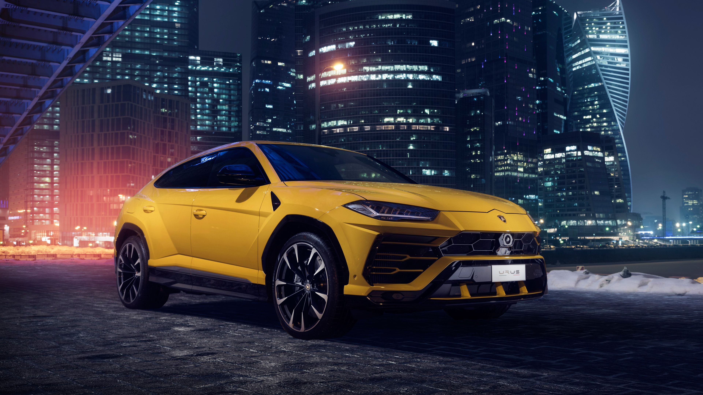
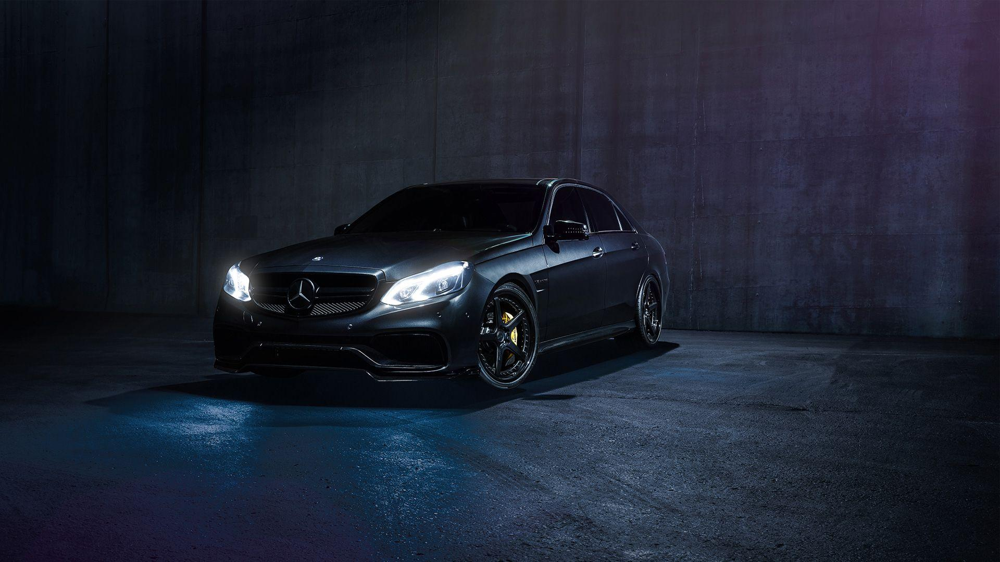
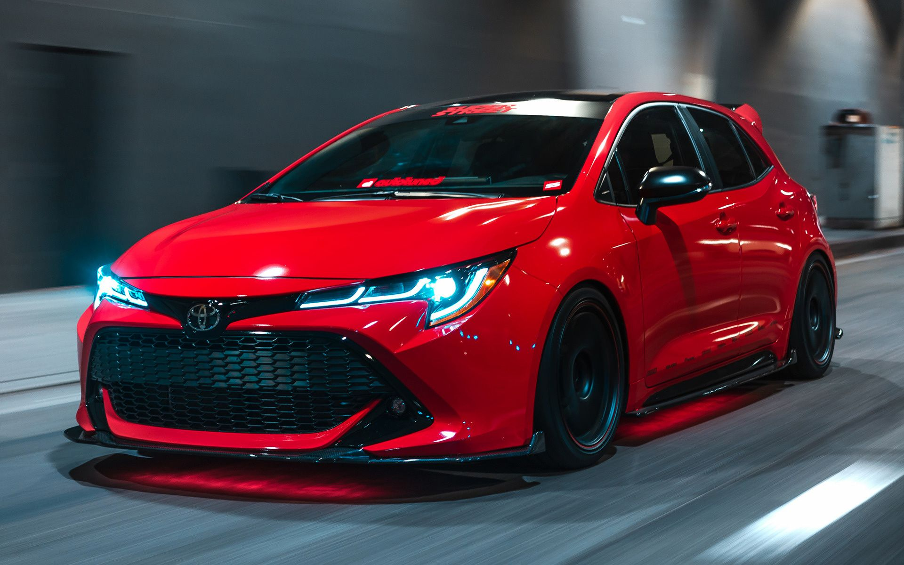
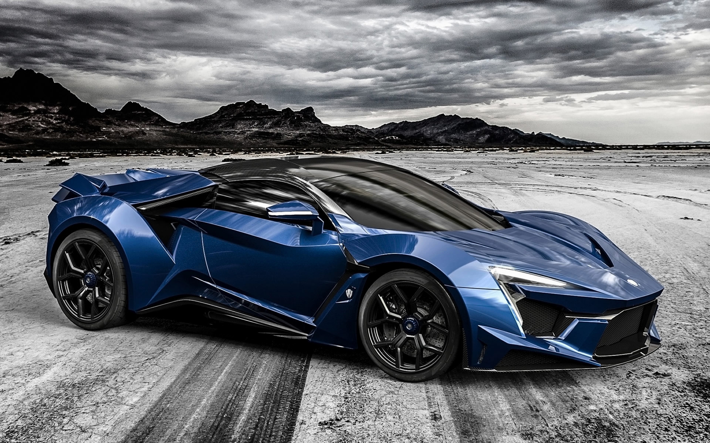

SUV NEWS

The top SUV cars in India include Tata Safari ( 14.70 Lakh), Hyundai Creta ( 10.00 Lakh) and Kia Seltos ( 9.90 Lakh). To see the latest price in your city, offers, variants, specifications, pictures, mileage and reviews of the best SUV cars, please select your desired car models from the list below.
Top 10 SUV Cars
MODELPRICE
Tata Safari 14.70 Lakh
Hyundai Creta 10.00 Lakh
Kia Seltos 9.90 Lakh
Toyota Innova Crysta 16.27 Lakh
Mahindra Thar 10.00 Lakh
Tata Harrier 14.00 Lakh
Toyota Fortuner 30.00 Lakh
Mahindra Scorpio 11.98 Lakh
MG Hector 12.90 Lakh
Jeep Compass 17.00 Lakh
SEDAN NEWS

Mercedes-Benz A-Class sedan India launch on March 25
The Mercedes-Benz A-Class sedan will finally go on sale in India on March 25, 2021 and will become the most affordable car in the company's lineup.Showcased first at the 2020 Auto Expo, initially, Mercedes-Benz India had intended to commence sales by June 2020, but the Covid-19 pandemic led to delays.The A-Class sedan, as the name suggests, has been derived from the current-gen A-Class hatchback. It is the smallest sedan Merc has in its lineup. In India, the A-Class sedan replaces the CLA in Mercedes-Benz's lineup and will become the most affordable three-pointed star once it goes on sale.
HATCHBACK NEWS

Top 5 best-selling premium hatchbacks in January 2021: Baleno, i20, Altroz, Glanza, Polo
The Maruti Suzuki Baleno, Hyundai i20, Tata Altroz, Toyota Glanza and Volkswagen Polo were the top five largest-selling premium hatchbacks in India in January 2021.The premium hatchback segment in India includes some quality vehicles like the Maruti Suzuki Baleno, Hyundai i20, Tata Altroz, Toyota Glanza, Volkswagen Polo and Honda Jazz. Let us check out the top five largest-selling premium hatchbacks in India in January 2021.
SPORTS CAR NEWS

10 Absolute Worst Sports Cars For Tall People
Whether they have no headroom or are absolutely impossible to get inside of, there are many cool sports cars tall people will never be able to enjoy.Whilst there are many sports cars that are suited towards tall people, many are really small and can be quite a tiny space for taller people to fit into. Sports cars such as the Ferrari Enzo and the Pagani Zonda are reflections of how sports cars could be big enough for those who are taller whilst also being sporty. Whilst this is true, most of the time sports cars are pretty much suited to a much smaller fit to hug the drivers better.